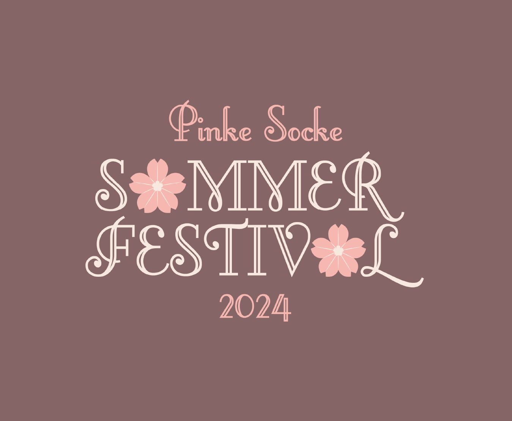
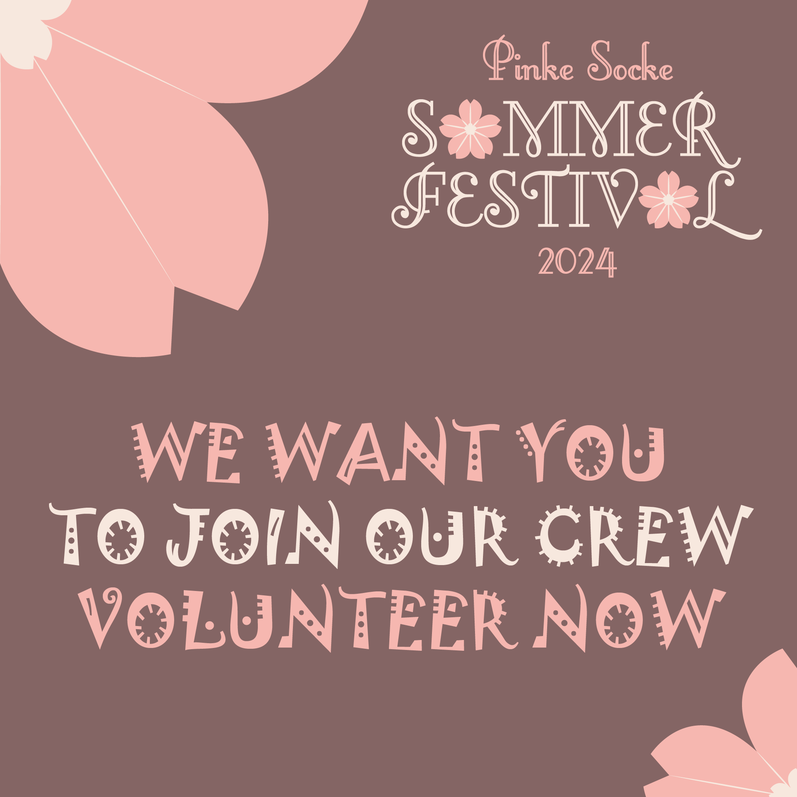
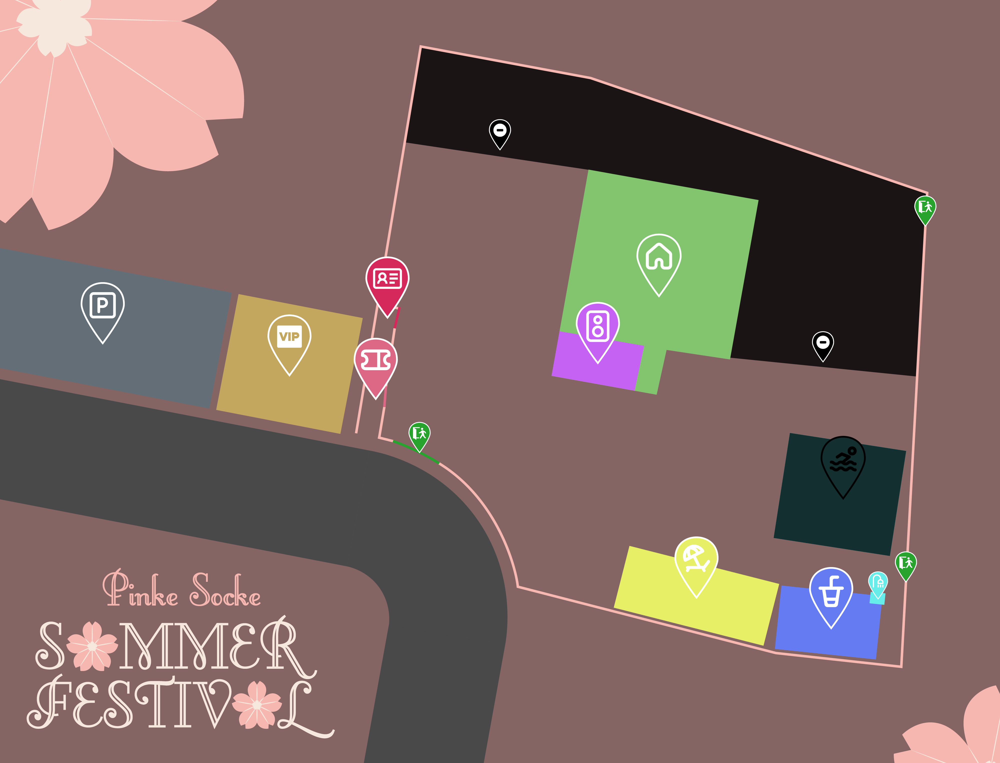

#PSSF24
24. & 25.07.2024
"THE SUMMER OF OUR LIVES"
Lineup &
Timetable
Für unsere Festivalgäste haben wir die Crème de la Crème der aufsteigenden Sterne gesichert. Wir freuen uns, diese wundervollen Artists auf dem #PSSF24 begrüßen zu dürfen.
Headliner
Neele Reisinger


Neele Reisinger ist eine aufstrebende Künstlerin in der Indie-Musikszene, die sich durch ihre virtuose Bass-Spielweise auszeichnet. Ihre Musik zeichnet sich durch eine einzigartige Mischung aus tiefgründigen Melodien und komplexen Rhythmen aus, die Hörerinnen und Hörer gleichermaßen fesseln. Neeles Talent am Bass verleiht ihren Songs eine besondere Tiefe und Textur, die in Kombination mit ihrer gefühlvollen Stimme eine unverwechselbare musikalische Identität schafft. Mit einer frischen Perspektive und innovativen Ansätzen in ihrer Musik setzt sie neue Maßstäbe im Genre der Indie-Musik und ist zweifellos eine Künstlerin, von der man noch viel hören wird.
Hummeltown & Rhythmusfehler
Hummeltown und Rhythmusfehler sind ein Gruppe, die sich auf entspannte und humorvolle Weise der experimentellen Musik verschrieben haben. Mit ihren spontanen und unkonventionellen Darbietungen verzaubern sie ihr Publikum und schaffen es immer wieder, sie auf eine Reise voller Überraschungen mitzunehmen. Ob auf der Bühne oder im Studio, Hummeltown und Rhythmusfehler setzen sich keine Grenzen und bringen eine einzigartige Mischung aus verschiedenen Musikrichtungen und Stilen hervor. Ihre Musik ist einzigartig und unwiderstehlich, so dass jeder, der sie hört, sich in ihrer entspannten, humorvollen und experimentellen Atmosphäre verliert.
Testbild

Testbild ist eine dynamische Produzenten- und DJ-Gruppierung, die frischen Wind in die elektronische Musikszene bringt. Mit einem kühnen Mix aus verschiedenen Genres – von Techno über House bis hin zu experimentellen Sounds – zeichnet sich Testbild durch ihre Innovationsfreude und die Fähigkeit aus, überraschende musikalische Landschaften zu erschaffen. Ihre Performances sind bekannt für energiegeladene Sets, die die Zuhörer auf eine akustische Reise mitnehmen, während sie gleichzeitig die Grenzen dessen, was auf der Tanzfläche möglich ist, neu definieren. Mit ihrer kreativen Herangehensweise an die Musikproduktion und ihrem unverwechselbaren Stil streben sie danach, die Szene nicht nur zu bereichern, sondern auch nachhaltig zu verändern.
Timetable
24.07.24 | Mittwoch
Zeit
Event
Ort
12:00 Uhr
Akkreditierungen
(VIP, Artist, Volunteer)
Einlass
13:00 Uhr
Eröffnung Festival
Einlass
13:30 Uhr
Eröffnung Stände Kategorie 1
(Süßwaren & Snacks)
Bar Area
14:00-15:00 Uhr
Auftritt Testbild
Bar Area
14:30-15:00 Uhr
Wasserpistolen-Kampf
Pool Area
15:00-16:30 Uhr
Wii Sports Tournament
Bar Area
17:00-17:30 Uhr
Pub Quiz
Bar Area
18:00-19:00 Uhr
#PSSF24 Playtime
Festivalgelände
19:00-20:00 Uhr
Auftritt Neele Reisinger
Elvenlight Stage
20:00 Uhr
Eröffnung Stände Kategorie 2
(Essen)
Indoor Area
21:00-23:30 Uhr
Karaoke Nacht
Indoor Area
23:30-00:30 Uhr
Happy Hour
Bar Area/Indoor Area
00:00 Uhr
Aftershow Party
Bar Area/Indoor Area
00:30-02:00 Uhr
Movie Night
Indoor Area
25.07.24 | Donnerstag
Zeit
Event
Ort
02:00-08:00 Uhr
Nachtruhe
Indoor Area
09:00 Uhr
Eröffnung Festival Tag 2
Einlass
10:00 Uhr
Eröffnung Stände Kategorie 3
(Frühstück)
Indoor Area
11:00-12:30 Uhr
Movie Night (2)
Indoor Area
13:00-14:30 Uhr
Just Dance Tournament
Bar Area
14:30-15:30 Uhr
Auftritt HTRF
Elvenlight Stage
16:00 Uhr
Abschluss
Einlass
Wir behalten es uns vor kurzfristige Änderungen vorzunehmen.
| Zeit | Event | Ort |
|---|---|---|
| 12:00 Uhr | Akkreditierungen (VIP, Artist, Volunteer) |
Einlass |
| 13:00 Uhr | Eröffnung Festival | Einlass |
| 13:30 Uhr | Eröffnung Stände Kategorie 1 (Süßwaren & Snacks) |
Bar Area |
| 14:00-15:00 Uhr | Auftritt Testbild | Bar Area |
| 14:30-15:00 Uhr | Wasserpistolen-Kampf | Pool Area |
| 15:00-16:30 Uhr | Wii Sports Tournament | Bar Area |
| 17:00-17:30 Uhr | Pub Quiz | Bar Area |
| 18:00-19:00 Uhr | #PSSF24 Playtime | Festivalgelände |
| 19:00-20:00 Uhr | Auftritt Neele Reisinger | Elvenlight Stage |
| 20:00 Uhr | Eröffnung Stände Kategorie 2 (Essen) |
Indoor Area |
| 21:00-23:30 Uhr | Karaoke Nacht | Indoor Area |
| 23:30-00:30 Uhr | Happy Hour | Bar Area/Indoor Area |
| 00:00 Uhr | Aftershow Party | Bar Area/Indoor Area |
| 00:30-02:00 Uhr | Movie Night | Indoor Area |
| Zeit | Event | Ort |
|---|---|---|
| 02:00-08:00 Uhr | Nachtruhe | Indoor Area |
| 09:00 Uhr | Eröffnung Festival Tag 2 | Einlass |
| 10:00 Uhr | Eröffnung Stände Kategorie 3 (Frühstück) |
Indoor Area |
| 11:00-12:30 Uhr | Movie Night (2) | Indoor Area |
| 13:00-14:30 Uhr | Just Dance Tournament | Bar Area |
| 14:30-15:30 Uhr | Auftritt HTRF | Elvenlight Stage |
| 16:00 Uhr | Abschluss | Einlass |
Tickets
Unsere Tickets für das Festival sind jetzt verfügbar. Klicke auf den untenstehenden Button, um direkt zu unserer Ticketseite zu gelangen. Dort findest du alle Informationen zu Ticketoptionen, Preisen und exklusiven Angeboten. Warte nicht zu lange – die Plätze sind begrenzt!
Volunteer

Willkommen in unserer Festival-Familie! Wir suchen leidenschaftliche, energiegeladene und enthusiastische Freiwillige, die Teil unseres unglaublichen Crew-Teams werden möchten. Ob du ein Musikliebhaber, ein Festival-Enthusiast oder einfach jemand bist, der gerne neue Erfahrungen sammelt und neue Leute trifft – wir haben den perfekten Platz für dich! Als freiwilliges Crew-Mitglied spielst du eine entscheidende Rolle beim Erfolg unseres Festivals. Du wirst nicht nur hinter die Kulissen eines der aufregendsten Events des Jahres blicken, sondern auch wertvolle Fähigkeiten erlernen, unvergessliche Erinnerungen schaffen und Freundschaften fürs Leben knüpfen.
Warum freiwillig bei uns mitmachen?
- Einzigartige Erfahrungen: Erlebe das Festival aus einer ganz neuen Perspektive und sei Teil des Teams, das die Magie erst möglich macht.
- Netzwerk aufbauen: Treffe Gleichgesinnte sowie Profis aus der Branche und erweitere dein Netzwerk.
- Fähigkeiten entwickeln: Egal, ob im Bereich Kundenservice, Technik oder Logistik – du hast die Möglichkeit, neue Fähigkeiten zu erlernen und bestehende zu verbessern.
- Freier Zugang: Als Dankeschön für deine Hilfe erhältst du freien Zugang zu Teilen des Festivals, wenn du nicht im Einsatz bist.
Deine Rolle als Crew-Mitglied
Unsere freiwilligen Crew-Mitglieder unterstützen uns in verschiedenen Bereichen, darunter:
- Auf- und Abbau
- Gästebetreuung
- Hilfe bei der Logistik und im Catering-Bereich
- Und vieles mehr!
Wir suchen Freiwillige, die motiviert, verantwortungsbewusst und teamfähig sind. Du solltest bereit sein, in einem dynamischen Umfeld zu arbeiten und dabei immer ein Lächeln für unsere Gäste übrig haben.
So meldest du dich an
Bist du bereit, ein unvergessliches Abenteuer zu erleben und Teil unserer Festival-Crew zu werden? Dann schick uns einfach eine E-Mail an bluestar@breitband.group oder sprich uns an und erzähle uns ein wenig über dich und warum du mitmachen möchtest. Wir freuen uns darauf, dich kennenzulernen!
Danke, dass du erwägst, deine Zeit und Energie unserem Festival zu widmen.
Lageplan

Hier ist unser offizieller Lageplan, der dir hilft, dich auf unserem Festivalgelände zurechtzufinden. Unsere bunten Markierungen auf dem Plan zeigen, wo die verschiedenen Bereiche sind:
- Die schwarze Umrandung und der rosa Bereich kennzeichnen das Festivalgelände.
- Das Grün zeigt den Eingangsbereich – hier findet der Einlass statt.
- Freies Parken ist in Grau markiert, und wer es etwas exklusiver mag, findet die VIP-Parkplätze in Orange direkt neben dem Festivalgelände.
- Der Indoor-Bereich ist in Hellblau dargestellt und bietet eine Vielzahl von Unterhaltungsmöglichkeiten abseits der Hauptbühne.
- Die Streichelzoo-Area, in Braun gehalten, verspricht Spaß für Groß und Klein.
- Abkühlung gibt's im Pool-Bereich (Dunkelblau) oder am Strandbereich (Gelb).
- Für Erfrischungen aller Art steht die Bar-Area (Pink) zur Verfügung.
- Und nicht zu vergessen: Die Elvenlight Stage (Lila), wo unsere Acts auftreten.
Packen deine Sonnenbrille und Festivaloutfit ein und bereite dich auf ein unvergessliches Erlebnis vor. Wir können es kaum erwarten, dich beim Pinke Socke Sommerfestival 2024 zu begrüßen!
Aftermovie 2024

Hier wird in Zukunft der Aftermovie zu #PSSF24 zu finden sein.
Bilder &
Videos
#PSSF23


{kind=link}
{kind=link}
{kind=link}
{kind=link}
{kind=link}
{kind=link}
{kind=link}
© Bluestar Entertainment, Teil der BreitbaND Group.
Design: HTML5 UP & LamplNet Solutions.
Zur Homepage | AGB
Design: HTML5 UP & LamplNet Solutions.
Zur Homepage | AGB